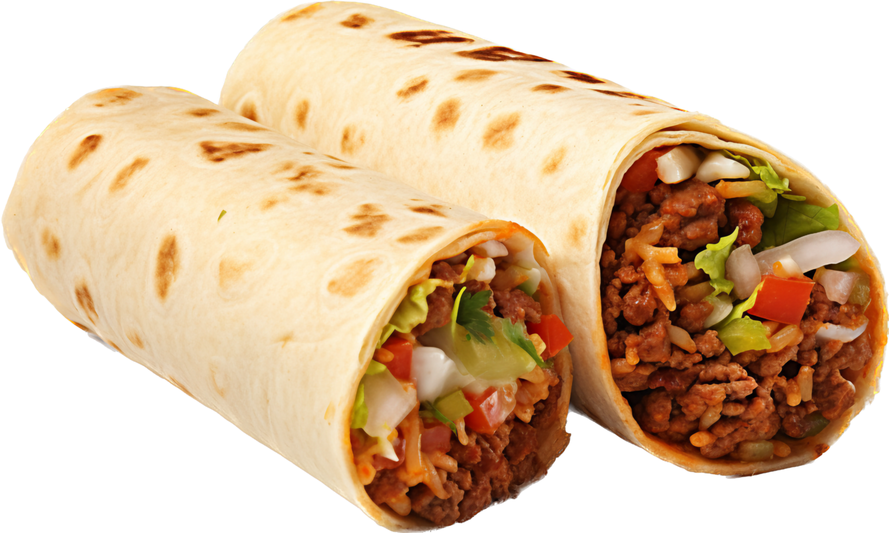

Burritos

Description
Burritos are a quick and tasty meal to make for the family
after a long day at work when you don't have the energy for a big
production that is sure to leave even the pickiest eaters satisfied.
Ingredients
- x1 Onion
- Ground Beef
- Tajin seasoning
- Rosarita refried beans
- Shredded cheddar cheese
- Olive Oil
- Burrito size flour tortillas
- Canned black olives
- chopped garlic
- 8oz can of tomato paste
- Green sauce, or salsa depending on preference
- Cumin, salt, pepper
Steps
- Chop onion and saute in olive oil.
Once soft, add large spoonful of garlic.
- Add ground beef and cook till brown. While browning,
add cumin and salt and pepper to taste.
- Add Tajin seasoning to taste.
- Add tomato paste and 1 can of water. Stir and season to taste
- Add refried beans, olive oil, and a handful of cheese to a
separate pot and cook on low-med heat until beans are soft.
- Add cooked meat and beans, olives, green sauce or salsa, and cheddar to tortilla and wrap tightly.
- Enjoy!
Home